name: title layout: true class: center, middle, inverse --- #CGEOM 2023 ##GEOTOOLS - SDI ## OGC APIs Uni Carl Vogt<br>06-02-2022 --- layout:false class: left, top ## Programme 0. L'évolution du web et des SIG 0. La standardisation 0. Organisations 0. Les standards OGC 0. La réalité derrière WxS 0. OGC APIs 0. OGC Standards Roadmap 0. Correspondance OGC APIs vs WxS 0. Les enjeux pour la Suisse 0. En pratique ça donne quoi? --- ## 1. L'évolution du web et des SIG .pull-left[ ### 1795 - Epidémie de fièvre jaune - Valentine Seaman, NYC - Carte de l'épidémie <p style="text-align:center;"></p> ] .pull-right[ <p style="text-align:center;">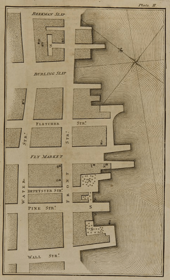</p> ] --- ## 1. L'évolution du web et des SIG .pull-left[ ### 1960 - Début des SIG - 1ers ordinateurs - Analyses spatiales - Création du NCGIA <p style="text-align:center;">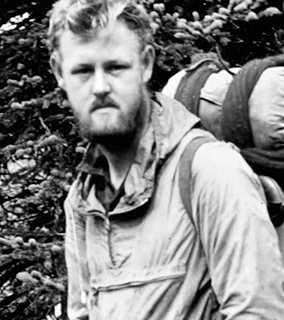</p> ] .pull-right[ <p style="text-align:center;"></p> ### 1963 - Roger Tomlinson - Inventaire des Ressources Naturelles - Tâches automatisées - SIG Canada ] ??? - Michael Goodchild, National Center for Geographic Information and Analysis (NCGIA) - Référence: https://www.esri.com/en-us/what-is-gis/history-of-gis --- ## 1. L'évolution du web et des SIG .pull-left[ <p style="text-align:center;"><img src="./images/tim-berners-lee.jpg" alt="Tim Berners-Lee" width="100%"></p> ### 1993 - Premières cartes sur le web - PARC Map Viewer - Xerox ] .pull-right[ ### 1989 - Naissance du web - Tim Berners-Lee - Toile de liens hypertextes - Logiciel libre<br><br><br><br> <p style="text-align:center;">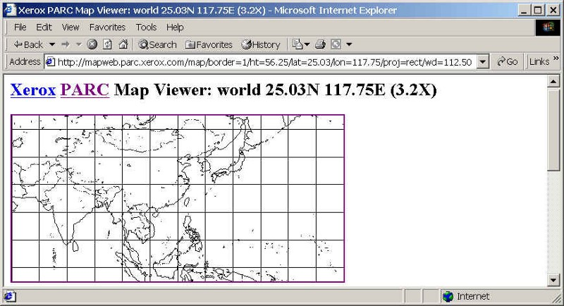</p> ] <!-- - Pour aller plus loin: https://forrest.nyc/a-brief-history-of-web-maps/ --> --- ## 1. L'évolution du web et des SIG .pull-left[ ### 2005 - Google Maps - Pan, zoom & drag - Slippy map (raster) - Standard pour toutes les futures cartes web <p style="text-align:center;"><img src="https://cdn-images-1.medium.com/max/800/1*ayA9yoi4dePrHaXVhRrEHg.gif" alt="Vector tiles" width="100%"></p> ] .pull-right[ <p style="text-align:center;">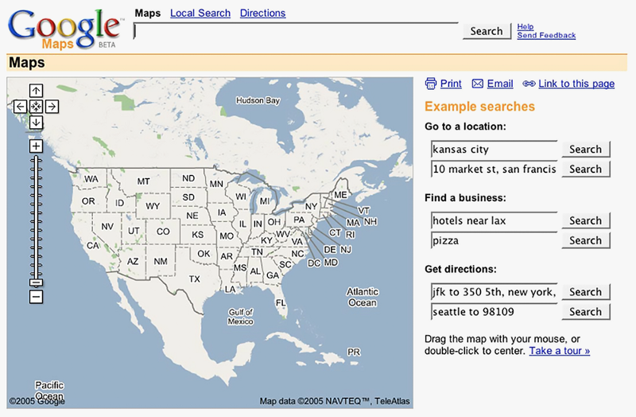</p> ### 2016 - Tuiles vectorielles - Requêtes serveur optimisées - Rendu côté client - Options de personalisation ([Maputnik](https://maputnik.github.io/editor/), [GeoAdmin API](https://api3.geo.admin.ch/services/sdiservices.html#getstyle)) ] ??? - Swisstopo Base Light Vector Tiles: https://vectortiles0.geo.admin.ch/tiles/ch.swisstopo.leichte-basiskarte.vt/v2.0.0/{z}/{x}/{y}.pbf - Associated style: https://vectortiles.geo.admin.ch/styles/ch.swisstopo.leichte-basiskarte.vt/style.json - Grey Style: https://gist.github.com/maxcollombin/e49f6167aa1d328fd22dadecf2a0135e#file-styles-ch-swisstopo-leichte-basiskarte-grey-vt_v004-json - Source: https://forrest.nyc/a-brief-history-of-web-maps/ --- ## 2. La standardisation ### Principes **FAIR**: - Découvrable - Accessible - Interopérable - Réutilisable <p style="text-align:center;">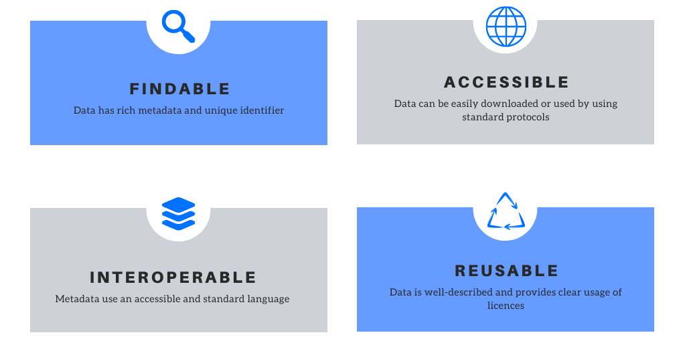</p> --- ## 3. Organisations ### [World Wide Web Consortium](https://www.w3.org/) - Fondé en **1994** - [Tim Berners-Lee](https://www.w3.org/People/Berners-Lee/) - **Missions principales** - ⭐Préservation et amélioration du web - 🚀Interopérabilité - 🎯Universalité - 📈Evolution - [W3CSchools](https://www.w3schools.com/) <p style="text-align:center">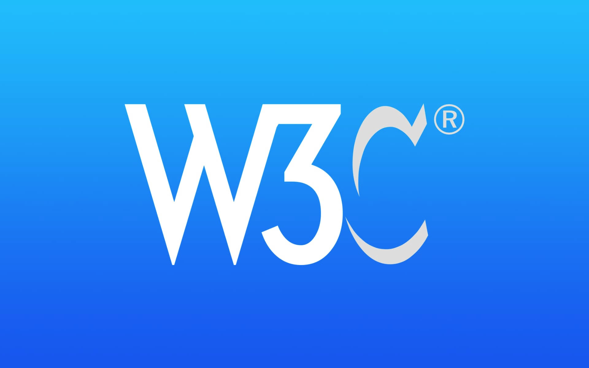</p> ??? - neutre et impartial - interopérabilité: garantir la compatibilité des matériels et logiciels qui partagent l’information sur le web, pour éviter un enfermement des données - universalité: rendre accessible web tt le monde, quelque soit le péripérique ou type de personne; accessibilité pour les individus souffrant de handicap - web libre d'intégrer de nouveaux langages et technologies; bonnes pratiques et méthodologies - HTML5, HTML, XHTML, XML, RDF, SPARQL, CSS, XSL, PNG, SVG, MathML et SOAP - source: https://digitics.fr/w3c-ou-world-wide-web-consortium-quest-ce-que-cest/ --- ## 3. Organisations ###[Open Geospatial Consortium](https://www.ogc.org/)<br> .pull-left[ - Organisation internationale de plus de 500 membres - Elaboration de standards **géospatiaux** ouverts - **HEIG-VD** membre depuis **2010** - Making Location **FAIR** - Réduction du risque technologique <p style="text-align:center;">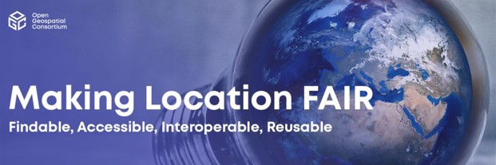</p> ] .pull-right[ <p style="text-align:center;">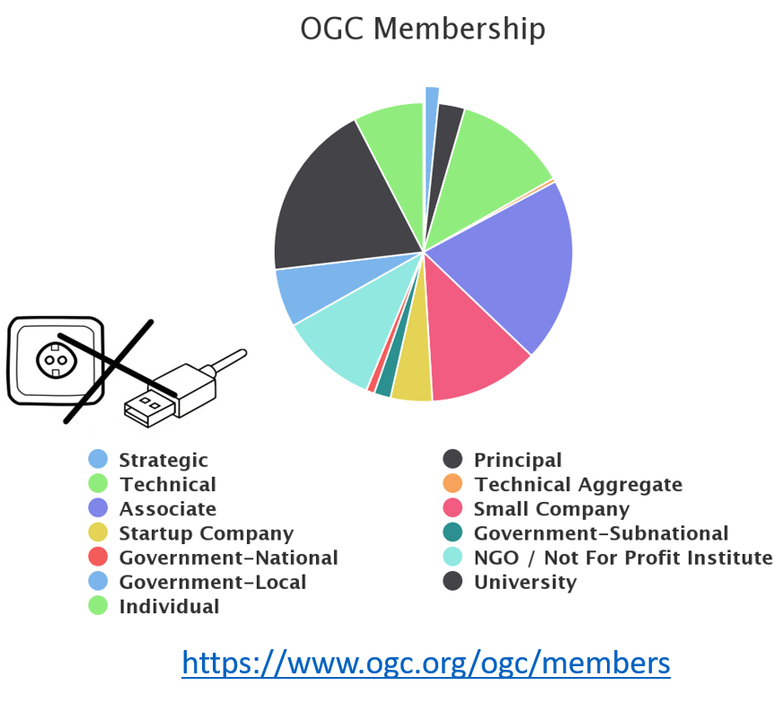</p> ] --- ## 4. Les standards OGC ### Quels sont les principaux services que vous connaissez et/ou utilisez?<br><br> <p style="text-align:center;"><iframe src="https://giphy.com/embed/777Aby0ZetYE8" width="480" height="259" frameBorder="0"></iframe></p> --- ## 4. Les standards OGC - Métadonnées et services de catalogage: - Catalogue Services for the Web (CSW) - Accès aux données: - Web Feature Service (WFS, WFS-T) - Web Coverage Service (WCS) - Sensor Observation Service (SOS) - Visualisation: - Web Map Service (WMS) - Styled Layer Descriptor (SLD) - Symbology Encoding (SE) - Web Map Tile Service (WMTS) - Traitement: - Web Processing Service (WPS) Pour aller plus loin: https://opengeospatial.github.io/e-learning/ --- ## 4. Les standards OGC:<br>Catalogue Services for the Web (CSW) ### Principaux cas d'utilisation en Suisse: [geocat.ch](https://www.geocat.ch/geonetwork/srv/eng/catalog.search#/home): le catalogue de données géographiques de la Suisse ### Principales opérations: `GetCapabilities`<br> `DescribeRecord`<br> `GetRecordById`<br> `GetRecords`<br> `GetDomain (Optional)`<br> `Harvest (Optional)` Pour aller plus loin: [Data.gov Catalogue Service for the Web (CSW) API](https://gist.github.com/kalxas/5ab6237b4163b0fdc930) --- ## 4. Les standards OGC:<br>Catalogue Services for the Web (CSW) ### Egalement accessible sous QGIS: 0. Parcourir: `Web`>`Metasearch`>`Metasearch` au niveau de la barre d'outils 0. Créer une nouvelle connexion 0. Indiquer l'adresse suivante: `http://www.geocat.ch/geonetwork/srv/fre/csw?` .pull-left[ <p style="text-align:center;">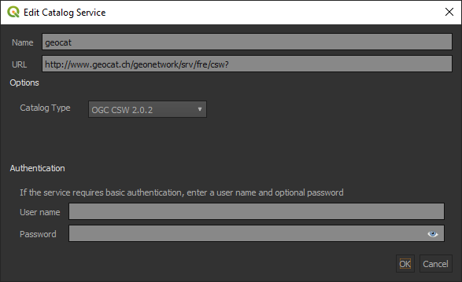</p> ] .pull-right[ <p style="text-align:center;">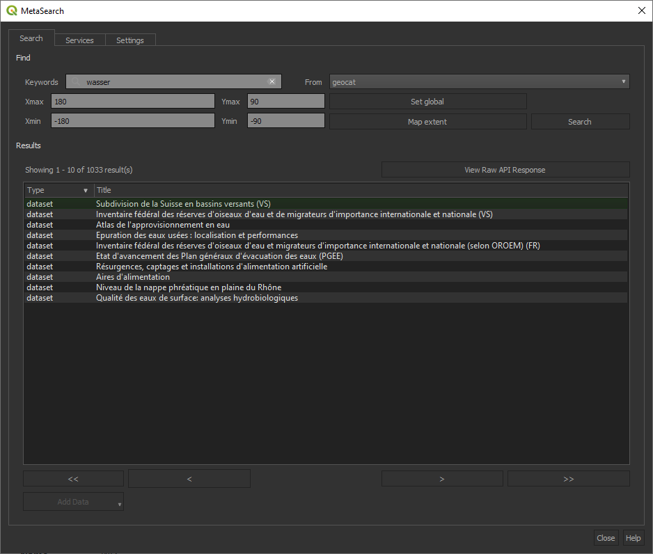</p> ] --- ## 4. Les standards OGC:<br>Web Feature Service (WFS, WFS-T) ### Principaux cas d'utilisation en Suisse: [geodienste.ch](https://geodienste.ch/services?locale=fr) ### Principales opérations: `GetCapabilities`<br> `DescribeFeatureType`<br> `GetFeature`<br> `ListStoredQueries`<br> `DescribeStoredQueries`<br> ### Ressources utiles: 🚀[ogc-client](https://camptocamp.github.io/ogc-client/) implémenté par Camptocamp --- ## 4. Les standards OGC:<br>Web Feature Service (WFS, WFS-T) ### Egalement accessible sous QGIS: 0. Parcourir: `Layer`>`Add Layer`>`Add WFS Layer` au niveau de la barre d'outils 0. Créer une nouvelle connexion: `https://geodienste.ch/db/kataster_belasteter_standorte_v1_5_0/fra` <p style="text-align:center;">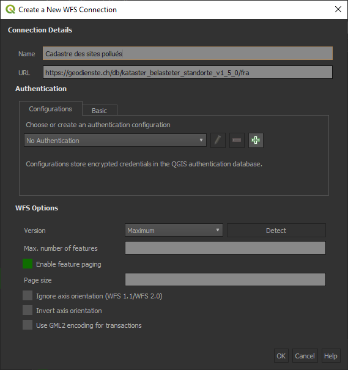</p> --- ## 4. Les standards OGC:<br>Web Map Service (WMS) ### Principaux cas d'utilisation en Suisse: [map.geo.admin.ch](https://map.geo.admin.ch) ### Principales opérations: `GetCapabilities`<br> `GetMap`<br> `GetFeatureInfo`<br> `DescribeLayer`<br> `GetLegendGraphic` ### Ressources utiles: 🚀[ogc-client](https://camptocamp.github.io/ogc-client/) implémenté par Camptocamp ??? - wms swisstopo: https://wms.geo.admin.ch/?SERVICE=WMS&VERSION=1.3.0&REQUEST=GetCapabilities --- ## 4. Les standards OGC:<br>Web Map Service (WMS) ### Egalement accessible sous QGIS: 0. Parcourir: `Layer`>`Add Layer`>`Add WMS Layer` au niveau de la barre d'outils 0. Créer une nouvelle connexion: `https://wms.geo.admin.ch/?VERSION=1.0.0&lang=fr` <p style="text-align:center;">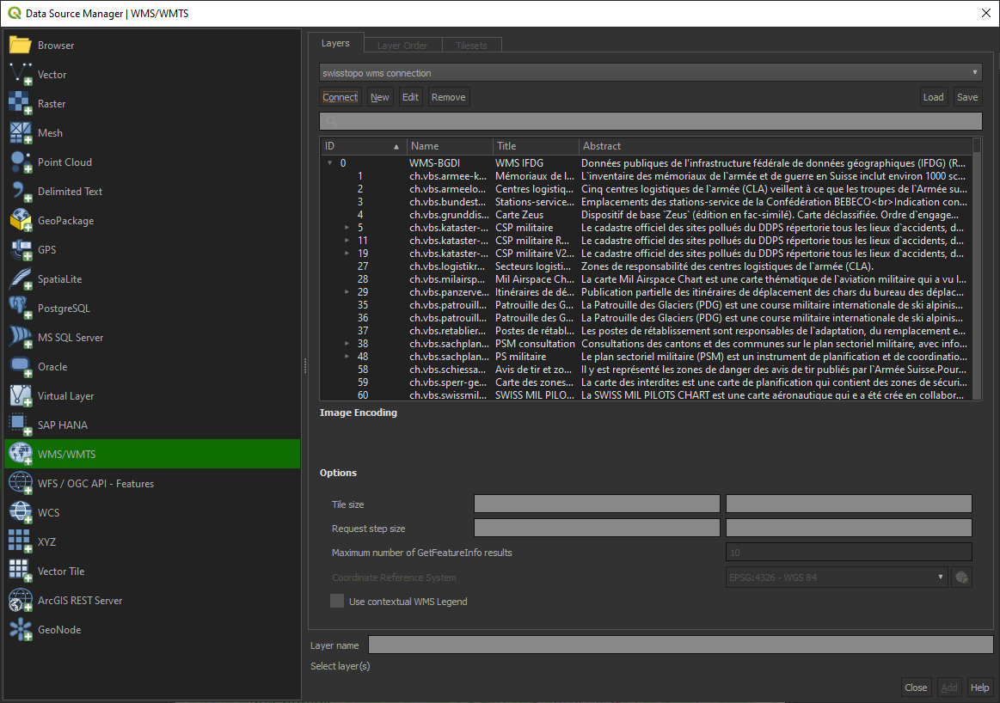</p> --- ## 4. Les standards OGC:<br>Styled Layer Descriptor (SLD) <p></p> <iframe height="500" style="width: 100%;" scrolling="no" title="WMS & SLD" src="https://codepen.io/MediaComem/embed/OJwjEXx?default-tab=result" frameborder="no" loading="eager" allowtransparency="true" allowfullscreen="true"> See the Pen <a href="https://codepen.io/MediaComem/pen/OJwjEXx"> WMS & SLD</a> by Ingénierie des médias (<a href="https://codepen.io/MediaComem">@MediaComem</a>) on <a href="https://codepen.io">CodePen</a>. </iframe> --- ## 4. Les standards OGC:<br>Web Map Tile Service (WMTS) ### Principaux cas d'utilisation en Suisse: [map.geo.admin.ch](https://map.geo.admin.ch) ### Principales opérations: `GetCapabilities`<br> `GetTile`<br> `GetFeatureInfo (Optional)` ### Egalement accessible sous QGIS: 0. Parcourir: `Layer`>`Add Layer`>`Add WMTS Layer` au niveau de la barre d'outils 0. Créer une nouvelle connexion: `https://wmts.geo.admin.ch/EPSG/2056/1.0.0/WMTSCapabilities.xml` --- ## 5. La réalité derrière WxS <p style="text-align:center;">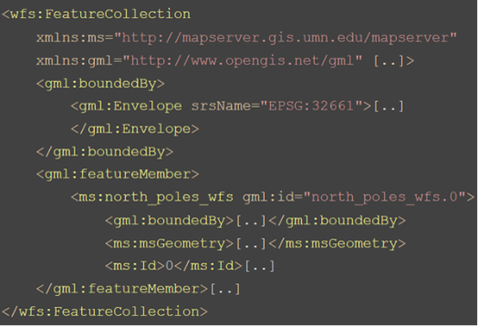</p> - encodage xml - architecture complexe - Challening pour les développeurs Web - Défi pour l'intégration du web grand public (indexation des recherches) --- ## 5. La réalité derrière WxS <p style="text-align:center;">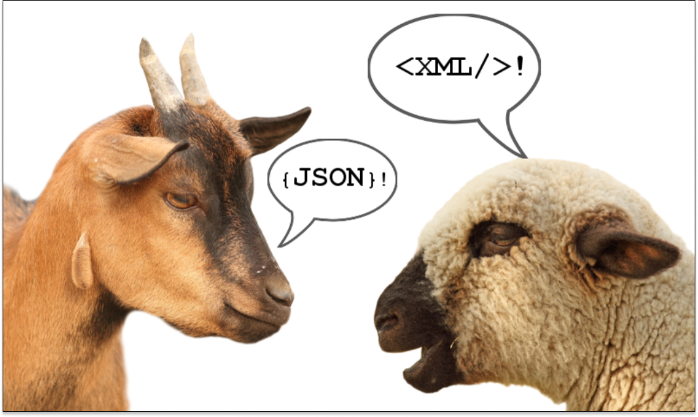</p> XML, JSON, YAML, ... **La réalité se trouve ailleurs!** --- ## 6. OGC APIs .pull-left[ - Nouvelle génération de standards amorcée en 2015 <p style="text-align:center;">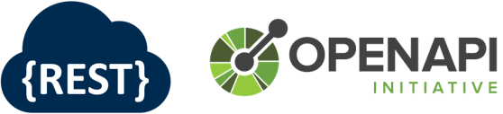</p> - JSON encoding - Orientés web - Endpoints communs et partagés tels que: - /landing page - /conformance - /openapi - /collections - /collections/foo ] .pull-right[ <p style="text-align:center;">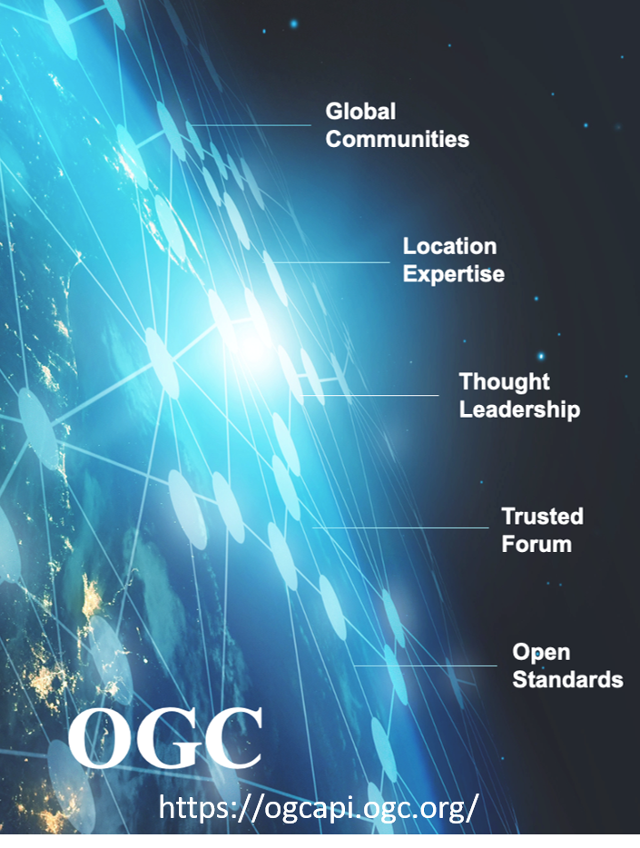</p> ] --- ## 7. OGC Standards Roadmap - **6** standards déjà adoptés - OGC API - Features Parts 1 & 2 - OA EDR - OA Processes - OGC API Tiles Part 1: Core - OGC API - Common - SensorThings API Part 1 <p style="text-align:center;">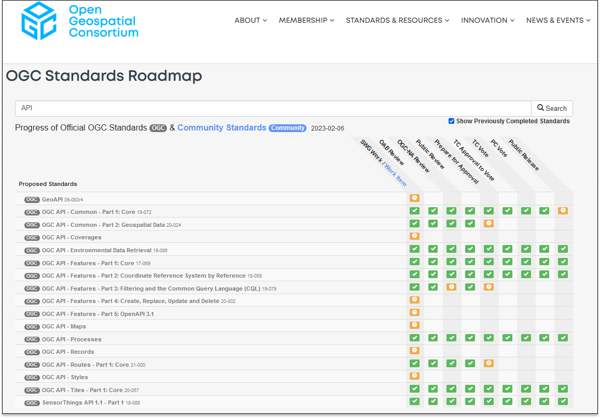<a href="https://www.ogc.org/roadmap">https://www.ogc.org/roadmap</a></p> --- ## 8. Correspondance OGC APIs vs WxS<br><br> <style type="text/css"> .tg {border-collapse:collapse;border-color:#ccc;border-spacing:0;} .tg td{background-color:#fff;border-color:#ccc;border-style:solid;border-width:1px;color:#333; font-family:'Droid Serif';font-size:14px;overflow:hidden;padding:10px 5px;word-break:normal;} .tg th{background-color:#f0f0f0;border-color:#ccc;border-style:solid;border-width:1px;color:#333; font-family:'Droid Serif';font-size:14px;font-weight:normal;overflow:hidden;padding:10px 5px;word-break:normal;} .tg .tg-ao2g{border-color:#333333;text-align:center;vertical-align:top} .tg .tg-de2y{border-color:#333333;text-align:left;vertical-align:top} @media screen and (max-width: 767px) {.tg {width: auto !important;}.tg col {width: auto !important;}.tg-wrap {overflow-x: auto;-webkit-overflow-scrolling: touch;}}</style> <div class="tg-wrap" align="center"><table class="tg"> <thead> <tr> <th class="tg-ao2g">OGC API</th> <th class="tg-ao2g">WxS</th> </tr> </thead> <tbody> <tr> <td class="tg-ao2g"><a href="https://docs.ogc.org/DRAFTS/19-087.html" target="_blank" rel="noopener noreferrer">OGC API Coverages</a></td> <td class="tg-ao2g"><a href="https://docs.opengeospatial.org/is/17-089r1/17-089r1.html" target="_blank" rel="noopener noreferrer">Web Coverage Service (WCS)</a></td> </tr> <tr> <td class="tg-ao2g"><a href="https://docs.ogc.org/is/19-086r5/19-086r5.html" target="_blank" rel="noopener noreferrer">OGC API Envionmental Data Retrieval (EDR)</a></td> <td class="tg-ao2g"><a href="http://docs.opengeospatial.org/is/17-089r1/17-089r1.html" target="_blank" rel="noopener noreferrer">Web Coverage Service (WCS)</a></td> </tr> <tr> <td class="tg-ao2g"><a href="https://docs.opengeospatial.org/is/17-069r4/17-069r4.html" target="_blank" rel="noopener noreferrer">OGC API Features</a></td> <td class="tg-ao2g"><a href="https://docs.opengeospatial.org/is/09-025r2/09-025r2.html" target="_blank" rel="noopener noreferrer">Web Feature Service (WFS)</a></td> </tr> <tr> <td class="tg-ao2g"><a href="https://github.com/opengeospatial/ogcapi-maps" target="_blank" rel="noopener noreferrer">OGC API Maps</a></td> <td class="tg-ao2g"><a href="https://portal.ogc.org/files/?artifact_id=14416" target="_blank" rel="noopener noreferrer">Web Map Service</a></td> </tr> <tr> <td class="tg-ao2g"><a href="http://docs.opengeospatial.org/DRAFTS/20-009.html" target="_blank" rel="noopener noreferrer">OGC API Styles</a></td> <td class="tg-ao2g"><a href="https://portal.ogc.org/files/?artifact_id=22364" target="_blank" rel="noopener noreferrer">Styled Layer Descriptor (SLD)</a></td> </tr> <tr> <td class="tg-ao2g"><a href="https://docs.ogc.org/is/18-067r3/18-067r3.html" target="_blank" rel="noopener noreferrer">OGC Symbology Conceptual Model: Core Part</a></td> <td class="tg-ao2g"><a href="https://portal.ogc.org/files/?artifact_id=16700" target="_blank" rel="noopener noreferrer">Symbology Encoding (SE)</a></td> </tr> <tr> <td class="tg-ao2g"><a href="http://docs.ogc.org/DRAFTS/20-057.html" target="_blank" rel="noopener noreferrer">OGC API Tiles</a></td> <td class="tg-ao2g"><a href="https://portal.ogc.org/files/?artifact_id=35326" target="_blank" rel="noopener noreferrer">Web Map Tiling Services (WMTS)</a></td> </tr> <tr> <td class="tg-ao2g"><a href="https://docs.ogc.org/is/18-062r2/18-062r2.html" target="_blank" rel="noopener noreferrer">OGC API Processes</a></td> <td class="tg-ao2g"><a href="http://docs.opengeospatial.org/is/14-065/14-065.html" target="_blank" rel="noopener noreferrer">Web Processing Service (WPS)</a></td> </tr> <tr> <td class="tg-ao2g"><a href="http://docs.ogc.org/DRAFTS/20-004.html" target="_blank" rel="noopener noreferrer">OGC API Records</a></td> <td class="tg-ao2g"><a href="http://docs.opengeospatial.org/is/12-168r6/12-168r6.html" target="_blank" rel="noopener noreferrer">Catalog Service for the Web (CSW)</a></td> </tr> <tr> <td class="tg-ao2g"><a href="https://docs.ogc.org/is/18-088/18-088.html" target="_blank" rel="noopener noreferrer">SensorThings API</a></td> <td class="tg-ao2g"><a href="https://portal.ogc.org/files/?artifact_id=47599" target="_blank" rel="noopener noreferrer">Sensor Observation Service (SOS)</a></td> </tr> <tr> <td class="tg-ao2g"><a href="https://stacspec.org/en/about/stac-spec/" target="_blank" rel="noopener noreferrer">SpatioTemporal Asset Catalogs (STAC)</a></td> <td class="tg-ao2g">-</td> </tr> </tbody> </table></div> --- ## 9. Les enjeux pour la Suisse - Stratégie suisse pour la géoinformation - Révision de la norme [eCH-0056: "Profil d’application de géoservices"](https://www.ech.ch/fr/standards/60396)<br><br> <p style="text-align:center;">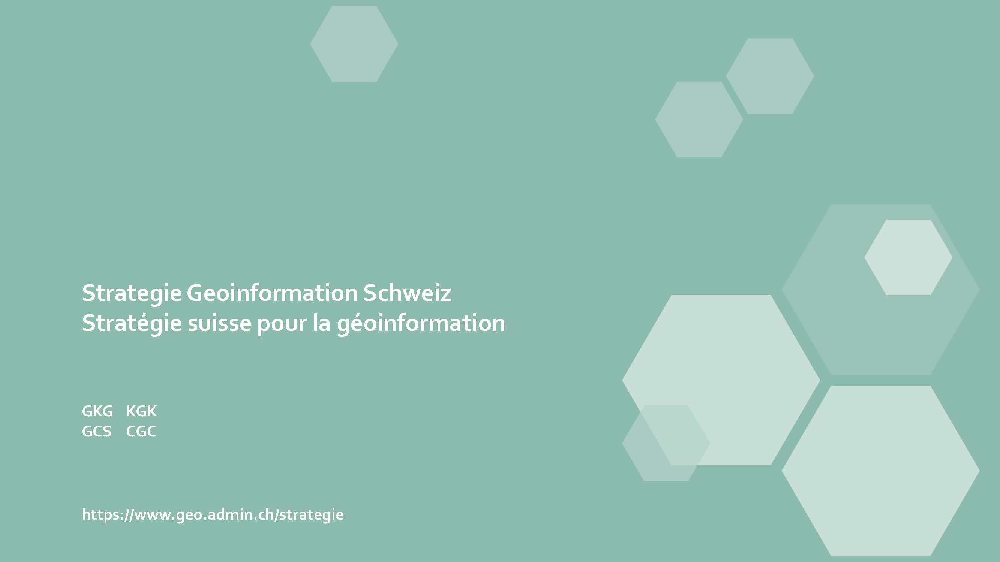</p> --- ## 10. En pratique ça donne quoi ? ### Plateforme de test: https://ogc.heig-vd.ch<br> <p style="text-align:center;">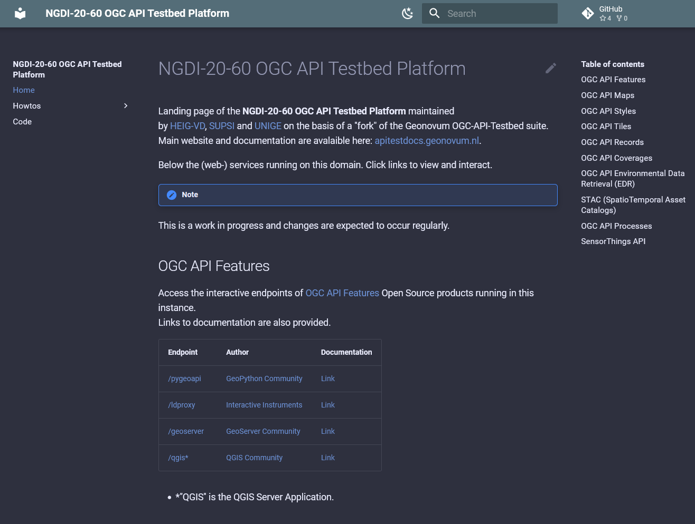</p> <p style="text-align:center;position:absolute;bottom:0;">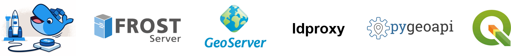</p> --- name: last-page template: inverse class: center, middle, inverse ## Merci pour votre attention! ``` maxime.collombin@heig-vd.ch ```